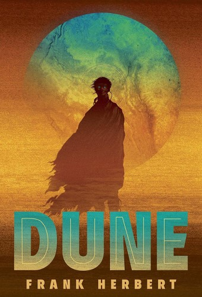

|  |
Duneby Frank HerbertMelange, or 'spice', is the most valuable - and rarest - element in the universe; a drug that does everything from increasing a person's life-span to making intersteller travel possible. And it can only be found on a single planet: the inhospitable desert world Arrakis. Whoever controls Arrakis controls the spice. And whoever controls the spice controls the universe. When the Emperor transfers stewardship of Arrakis from the noble House Harkonnen to House Atreides, the Harkonnens fight back, murdering Duke Leto Atreides. Paul, his son, and Lady Jessica, his concubine, flee into the desert. On the point of death, they are rescued by a band for Fremen, the native people of Arrakis, who control Arrakis' second great resource: the giant worms that burrow beneath the burning desert sands. In order to avenge his father and retake Arrakis from the Harkonnens, Paul must earn the trust of the Fremen and lead a tiny army against the innumerable forces aligned against them. |